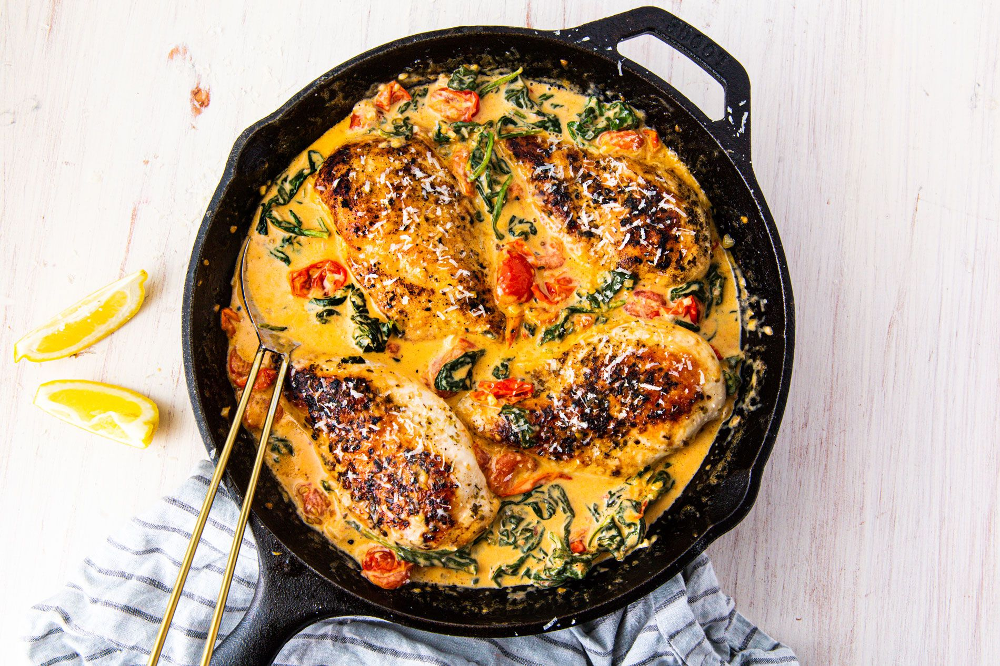

Creamy Tuscan Chicken

Decription
This simple, one skillet dish is sure to be a hit at the dinner table! Eat
is with a side of crusty bread, or toss it on top of rice or pasta.
Ingredients
- 1 tbsp. extra-virgin olive oil
- 4 boneless skinless chicken breasts
- Kosher salt
- Freshly ground black pepper
- 1 tsp. dried oregano
- 3 tbsp. butter
- 3 cloves garlic, minced
- 1 1/2 cup cherry tomatoes, halved
- 3 cups baby spinach
- 1/2 cup heavy cream
- 1/4 cup freshly grated parmesan
- Lemon wedges, for serving
Directions
- In a skillet over medium heat, heat oil. Add chicken and season with
salt, pepper, and oregano. Cook until golden and no longer pink, 8
minutes per side. Remove from skillet and set aside.
-
In the same skillet over medium heat, melt butter. Stir in garlic and
cook until fragrant, about 1 minute. Add cherry tomatoes and season
with salt and pepper. Cook until tomatoes are beginning to burst then
add spinach and cook until spinach is beginning to wilt.
-
Stir in heavy cream and parmesan and bring mixture to a simmer. Reduce
heat to low and simmer until sauce is slightly reduced, about 3 minutes.
Return chicken to skillet and cook until heated through, 5 to 7 minutes.
-
Serve with lemon wedges.